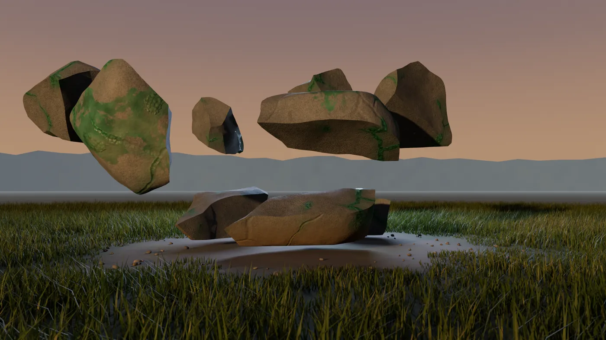
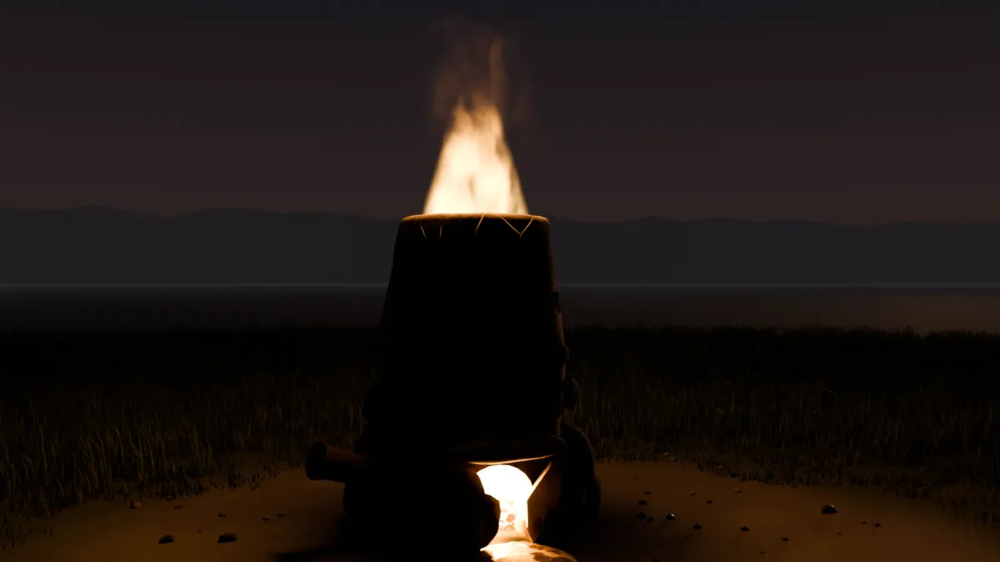

Wie ASHWRIGHT funktioniert, vom ersten Erzbrocken bis zum Meisterzeichen. Acht Kapitel, in der Reihenfolge, in der du sie im Spiel erlebst.
Die Insel
Sturm über dem Viadukt. Aufnahme aus dem Spiel.
Antoria nach dem Zusammenbruch. Die Insel ist menschenleer: Der Hafen liegt verlassen da, auf der Küstenstraße stehen Infizierte, und nachts wird es richtig dunkel. Du startest an der Küste mit einer Notfalltasche, einer Stein-Hacke und einem Lagerfeuer.
In der Jacke steckt ein Merkblatt des Zivilschutzes. Es beginnt mit dem Satz: „Im Ernstfall versorgt sich die Insel selbst.“ Daran hältst du dich. Alles, was du brauchst, stellst du selbst her, vom Werkzeug über Kleidung und Waffen bis zum Haus.
Draußen Endzeit, drinnen Stube. Je gefährlicher die Nacht, desto mehr zählt ein Haus mit Fensterläden und Kamin. Wie das aussieht, steht im Kapitel Bauen.
Erze & Vorkommen
Kein Erz spawnt zufällig. Jedes Vorkommen liegt da, wo es geologisch hingehört, berechnet aus den echten Kartendaten: Gestein, Gelände, Wasser und Hang. Wer weiß, wonach er suchen muss, findet mehr.
Erz steht in Gruppen und wächst in Echtzeit nach. Baust du eine Gruppe ganz ab, zieht sie weiter. Abgebautes Erz zerfällt mit der Zeit, Horten lohnt sich also nicht.

Ein Brocken bricht unter der Hacke. Render aus den Mod-Modellen.
Am Stein erkennst du, was vor dir liegt: Kupfer ist grün angelaufen, Eisenerz rostrot gebändert. Manche Vorkommen siehst du vom Weg aus, andere findest du nur, wenn du suchst.
Die Hacke entscheidet. Mit der Stein-Hacke kommst du nur an weiches Gestein. Ist sie zu weich für das Erz, prallt sie ab. Für härteres Erz brauchst du eine bessere Hacke.
Ofen & Schmelzen
Erz rein, Holzkohle drauf, und mit dem Blasebalg auf Temperatur bringen. Erst wenn der Ofen heiß genug ist, schmilzt das Erz. Die Holzkohle brennst du vorher selbst im Meiler. Den Lehmofen mauerst du selbst.

Der Schmelzofen aus Lehm und Stein.
Kupfer und Zinn werden zu Bronze, und mit Bronze-Werkzeug kommst du an das Eisen. Eisen braucht mehr Hitze als Bronze. Danach geht es weiter, welche Stufen noch kommen, findest du im Spiel heraus.
Rezepte findest du. Ein Rezept taucht im Menü auf, sobald du eine passende Zutat aufgehoben hast. Am Anfang kennst du nur eine Handvoll.
Güte
Jede Ader hat eine von fünf Güteklassen. Die steckt später im Barren und im Werkzeug. Seltene Funde merkst du sofort.
Unreinhäufig
Solide
Rein
Hochrein
Makellosselten
Wie gut ein Werkzeug wird, hängt am Erz und an der Erfahrung dessen, der es herstellt. Da wird nichts ausgewürfelt. Deine Stufe sperrt dir kein Rezept: Mit wenig Erfahrung wird die Ware schlechter, herstellen kannst du sie trotzdem.
Als Meister schreibst du Meisterschriften, und deine Ware trägt dein Zeichen.
Berufe
Es gibt 14 Berufe in vier Gruppen. Jede Arbeit bringt Erfahrung in ihrem Beruf. Höhere Stufen machen dich schneller und heben die Qualität, die du erreichen kannst. Du kannst alles lernen, aber alles zu beherrschen kostet sehr viel Zeit.
Schmiede in der Dämmerung. Aufnahme aus dem Spiel.
ab Stufe 0
Lehrling
Du kannst alles herstellen, nur in einfacher Qualität.
ab Stufe 100
Geselle
Ab hier schaffst du jede Qualität, die ein Rezept verlangt.
ab Stufe 200
Meister
Makellose Stücke und Meisterschriften.
Rohstoffe
Bergbau
Erz abbauen, mit mehr Ausbeute je Stufe.
Prospektion
Vorkommen finden und einschätzen.
Forst & Harz
Bäume fällen, Holz spalten, Harz sammeln.
Jagd & Gerben
Fell, Leder, Sehnen und Fleisch.
Veredeln
Hüttenwesen
Erz im Ofen zu Barren schmelzen.
Keramik & Glas
Tiegel, Gussformen, Ziegel.
Labor
Schwefel, Salpeter und andere Grundstoffe.
Landwirtschaft
Beete anlegen, ernten, Vorräte anlegen.
Münzer
Prägt die Münzen, mit denen gehandelt wird.
Herstellen
Schmieden
Werkzeug am Amboss, per Minispiel.
Büchsenmacher
Waffen aus Einzelteilen.
Mechanik
Motoren und Fahrzeuge.
Bauen
Hütten, Häuser, Mauern.
Draußen
Überleben
Feuer machen, Behelfswerkzeug, die ersten Tage.
Dazu kommen Fertigkeiten, die durch Übung besser werden: Kondition, Schleichen, Fernkampf, Nahkampf und Erste Hilfe.
Handel
Konzeptbild: Werkstatt mit Fuhrwerk.
Alles, was es gibt, hat ein Spieler hergestellt. Deshalb braucht irgendwann jeder jemand anderen: Wer in einem Beruf gut ist, handelt mit den anderen. Die ersten Tage laufen über Tausch, das Geld kommt später dazu.
Die Münzer prägen die Münzen, mit denen gehandelt wird. Wer lieber allein spielt, spielt jede Kette selbst durch, und Handel spart ihm Zeit.
Bauen
Konzeptbild: Stube mit Kamin, abends. So soll eine eingerichtete Base aussehen.
Bauen ist ein eigener Beruf: Hütten, Häuser und Mauern aus Holz, Lehm und Stein. Los geht es mit dem Ofen, den du selbst mauerst. Fensterläden, Kamin und eine Leiter oder Luke machen aus dem Rohbau eine Stube, und wer einrichtet, bekommt Komfort.
Alles, was du baust, besteht aus Material, das ein Spieler abgebaut, geschmolzen oder gesägt hat. Draußen herrscht Endzeit, drinnen soll es sich nach Zuhause anfühlen.
In Arbeit. Der Basebau ist noch nicht fertig. Woran wir gerade bauen, zeige ich regelmäßig als Sneak Peek im Discord.
Lärm & PvP
Arbeit macht Lärm. Abbauen, schmieden und bauen hört man weit, Infizierte hören es auch, und andere Spieler sowieso. Zwischen Felswänden trägt jeder Schlag weiter.
PvP gibt es mit Proximity-Chat. Außerhalb der Monuments gilt: erst ansprechen, dann schießen. In den Monuments wird ohne Warnung geschossen. Wer wiederholt ohne Ansprache tötet, fliegt vom Server. Die sieben Regeln stehen im Discord.